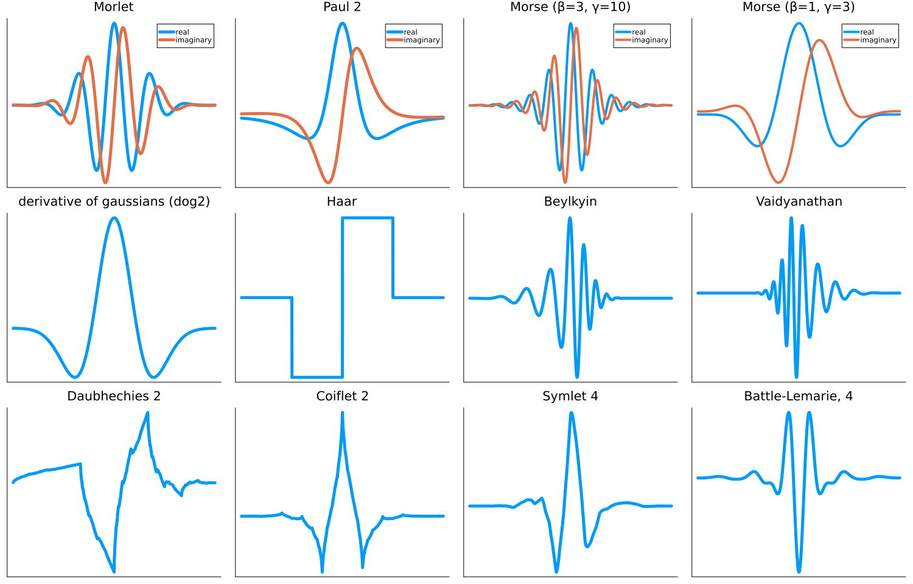

Wavelet types
There are two tiers of wavelet types in this package. The most abstract is the ContWave type, representing a class of wavelets
ContinuousWavelets.ContWave — TypeContWave{Boundary,T}The abstract type encompassing the various types of wavelets implemented in the package. The abstract type has parameters Boundary<:WaveletBoundary and T<:Number, which gives the element output type. Each has both a constructor, and a default predefined entry. These are:
Morlet: A complex approximately analytic wavelet that is just a frequency domain Gaussian with mean subtracted.Morlet(σ::T) where T<: Real.σgives the frequency domain variance of the mother Wavelet. Asσgoes to zero, all of the information becomes spatial. Default ismorlwhich has σ=2π.Paul{N}: A complex analytic wavelet.paulnfor n in1:20e.g.paul5Dog{N}: Derivative of a Gaussian, where N is the number of derivatives.dognfornin0:6. The Sombrero/mexican hat/Marr wavelet isn=2.ContOrtho{OWT}. OWT is some orthogonal wavelet of typeOrthoWaveletClassfrom Wavelets.jl. This uses an explicit construction of the mother wavelet for these orthogonal wavelets to do a continuous transform. Constructed viaContOrtho(o::W)whereois from Wavelets.jl. Alternatively, you can get them directly asContOrthoobjects via:cHaarHaar WaveletscBeylBeylkin WaveletscVaidVaidyanthan WaveletscDbnDaubhechies Wavelets. n ranges from1:InfcCoifnCoiflets. n ranges from2:2:8cSymnSymlets. n ranges from4:10cBattnBattle-Lemarie wavelets. n ranges from2:2:6
 Above are examples of every mother wavelet defined in this package; the only analytic and/or complex wavelets are the Morlet and the Paul wavelets. Once you have chosen a type of wavelet, this is used to construct the more specific CWT, which specifies more details of the transform, such as frequency spacing, whether to include an averaging filter or not, a frame upper bound, etc.